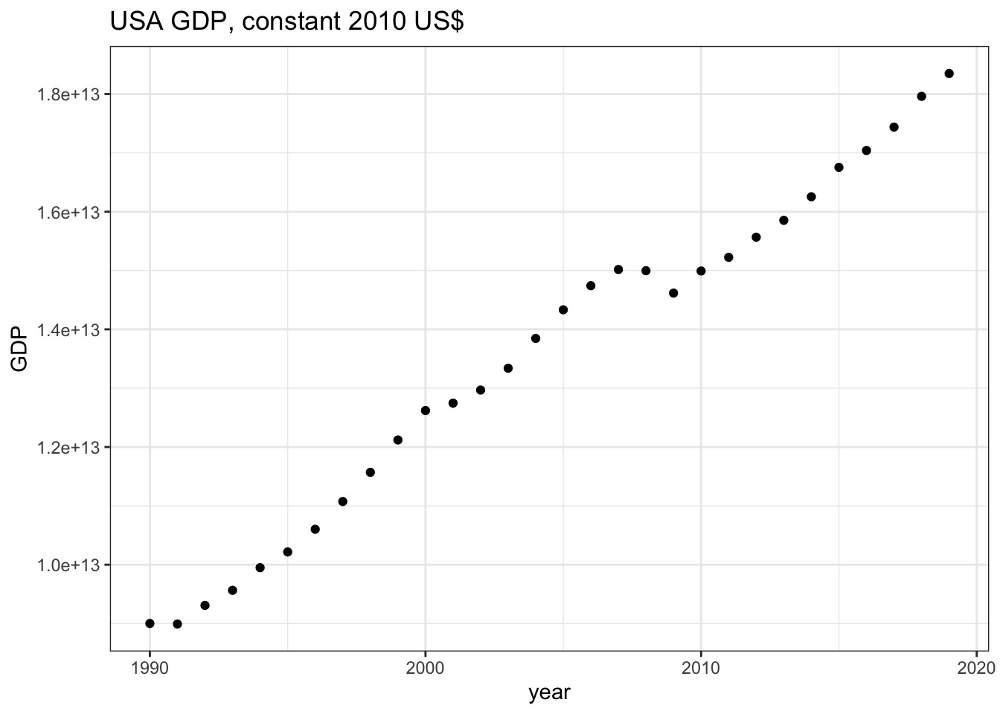

2.2 世界銀行World Bank ― WDI
世界銀行が提供する世界開発指標WDI（World Development Indicators）は,グローバルな開発状況と貧困について国際的に比較可能な統計をまとめたものです．このデータベースには，217の経済と40以上の国グループの1,600の時系列指標が収録されています．またその多くの指標のデータは50年以上前までさかのぼることができます.
WDIデータは，さまざまな方法で取得できるようにされています．詳しくは世銀ホームページを参照してください．ファイルが大きいためダウンロードに多少時間がかかりますが，すべてのデータ（ExcelおよびCSV形式ファイル）をまとめてダウンロードすることも可能です．
このWDIデータを利用するためのRパッケージWDIが開発されています .これ以外にもwbstatsというパッケージもありますが，ここではWDIを紹介します． RパッケージWDIは，世界銀行によって運営される40以上のデータベースからデータを検索・ダウンロードすることを可能にしています．そうしたデータベースには世界開発指標(WDI）はもちろんのこと，国際債務統計，Doing Business,人的資本指数，サブナショナルな貧困指標も含まれます．
2.2.1 インストール方法
RパッケージWDIはCRAN上で公開されていますのでインストールにはinstall.packages()を利用します．コンソール画面に次のように入力し，エンターキーを押してください．
# WDIのインストール
install.packages("WDI")WDIを利用するために，スクリプト画面にlibrary(WDI)と入力し，実行しておきます．
# WDIのロード
library(WDI)2.2.2 データを探す- WDISearch()
データを探すためにはWDIパッケージに用意されたWDIsearch()関数を使います．この関数は利用可能なWDIデータ系列のコード名，名前，説明，およびデータソースからなる行列を返します．基本的な書式は以下の通りです．
WDIsearch(string = "検索語", field = "name", short = TRUE, cache = NULL)それぞれの引数を説明しましょう．
- string = "“:”“に検索語（文字列）を入力します．WDIsearchは文字列マッチング関数grepを使い，”検索語”を探します．また，caseを無視します（igunore.case=TRUE）ので，正規表現―簡単に言えば，通常の文字―が利用可能です．
- field = "“:”“に検索するフィールドを指定します．利用可能なフィールドは”indicator“,”name“,”description“,”sourceDatabase“,”sourceOrganization“です．たとえば”name" と入力すれば，データのnameの中を検索します．
- short = : 既定値はshort=TRUEです．この場合，指標コードと名前だけを返します．short=FALSEの場合，指標コード，名前，説明およびデータソースを返します．
- cache: WDIcache関数によって作成されるデータリストを返します．省略された場合（あるいはNULLの場合），WDIseachはデータ系列のローカルリストを探します．
たとえば，GDPに関するデータを探すとしましょう．この例では検索文字列を“gdp”とし，探すフィールドを“name”にしています．また，詳しい説明を得るためにshort=FALSEと設定しています．検索結果はオブジェクトgdpに格納します．
gdp <- WDIsearch(string = "gdp",field = "name",short = FALSE, cache = NULL)この結果をView(gdp)でみると，539×5の行列が返されます．ここで重要なのはindicator変数です．これは指標コードであり，ダウンロードのさいに利用されます．

WDIsearch()の検索結果
絞り込みが不十分なため，539行のデータ系列が表示されてしまっていますが，スクロールダウンして行くと，448行めにGDP(constant 2010 US$)が見つかります．そのindicator名はNY.GDP.MKTP.KDです.以下の例においては，これをダウンロードします．
2.2.3 データをダウンロードする- WDI()
データをダウンロードするためにはWDI()関数を利用しますが，利用方法は次のようになります.
WDI(
country = "all",
indicator = "NY.GDP.MKTP.KD",
start = 1960, end = 2020, extra = FALSE, cache = NULL
)この関数は６つの引数をとります．それぞれを簡単に説明しましょう.
- country = "“:”“の中に，ダウンロード対象の国名（ISO-2文字コードで表現された国名）を入力します．たとえば，”US“,”CA“,”JP“です．複数の国を指定したい場合，c()を利用します. country = c(”US“,”CA“,”JP“) と入力します．なお，”all"と入力すると，すべての利用な国のデータがダウンロードされます．
- indicator = : 指標のコード名を入力します．これは上の表のindicator列に表示されているものになります．
- start = :データの開始年です．通常整数フォーマットの年です（ただし，1960以上）．
- end = :データの終了年です．言うまでもなく，start引数に指定した値より大きくなければなりません.
- extra = : TRUEの場合，地域，iso3コード，所得水準といった追加的な変数を返します．
- WDIcache()によって作成されるリストで，extra = TRUEのとき利用されます．
それではWDI()関数を使って，アメリカ経済のGDP(constant 2010 US$)をダウンロードしてみます．このGDPデータのindicatorコードは，上述のとおり，NY.GDP.MKTP.KDです．ダウンロードしたデータはgdp_usという名前をつけたオブジェクトに格納します．
gdp_us <- WDI(country = "US", indicator = "NY.GDP.MKTP.KD", start = 1990, end = 2019, extra = FALSE, cache = NULL) head()やView()関数を使ってダウンロードしたデータを確認してみてください．
head(gdp_us)## iso2c country NY.GDP.MKTP.KD year
## 1 US United States 1.834911e+13 2019
## 2 US United States 1.796094e+13 2018
## 3 US United States 1.743841e+13 2017
## 4 US United States 1.704090e+13 2016
## 5 US United States 1.675416e+13 2015
## 6 US United States 1.625426e+13 2014最後に，ダウンロードしたGDPデータをggplot2を使ってグラフにしてみましょう．
ggplot(data = gdp_us)+
geom_point(mapping = aes(x = year,y = NY.GDP.MKTP.KD))+
labs(
title = "USA GDP, constant 2010 US$",
y = "GDP"
)+
theme_bw()
これを実行すると，[Plots]ウィンドウに上のグラフが表示されます.